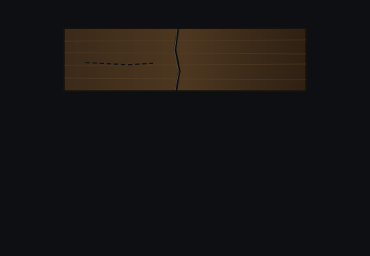

Two cracks start in the same loaded beam at the same moment. One runs across the grain, one along it. The one along the grain closes itself as it goes — the fibers pull it shut — so it does not get far. The one across the grain opens, and reaches the far side.
The slow one is not slower. It is held by the same wood that holds the beam up. What stops it is the structure, not time.
Raw Fall of Sillwork — on qwen3.8